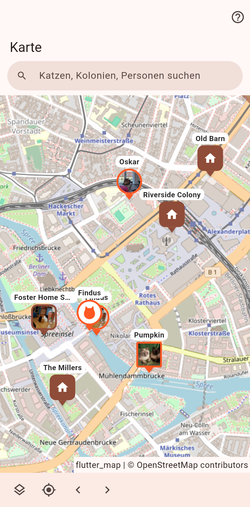

Jede Katze und jeder Ort mit Position. Zuhause an ihrer Adresse, Katzen an ihrer letzten Sichtung, Aushänge dort, wo sie hängen, deine eigenen Ortsfelder als Pins.

Ein runder Pin ist eine Katze, ein abgerundetes Quadrat ein Zuhause, ein Quadrat ein Aushang. Was auf einem Fleck steht, teilt sich einen Pin mit Zähler; ein Tipp öffnet die Liste dessen, was dort ist. Ein Tipp auf einen einzelnen Pin zeichnet seine Spur: jede Position der Reihe nach, jede ein Punkt, dessen langer Druck den Verlauf, eine Korrektur und das Entfernen anbietet. Die Pfeile unten laufen von Pin zu Pin.
Die Suche findet Katzen, Personen und Orte; ein unbekannter Name wird weltweit gesucht. Der Ebenen-Knopf zeichnet das mögliche Streunergebiet einer vermissten Katze: 500-m-Kreise um ihre Aushänge und das Zuhause, aus dem sie weglief.
Ein langer Druck auf den Boden fragt, welche Katze, dann ob sie hier gesehen wurde oder ihr Aushang hier hängt. Ein langer Druck auf den Pin eines Aushangs bietet "Aushang abgenommen" an, das diese Position wie jede Verlaufszeile entfernt, und den Verlauf.